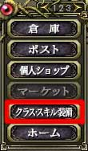
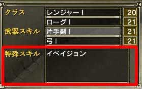

目次
>
ゲームについて
>
日本Falcom攻略
>
Sorcerian Online
>
チュートリアル
>
武器スキル
Sorcerian Online
|
概要
|
チュートリアル
|
|
クラス・クラススキル に戻る
|
クラス、クラススキルの変更
クラススキルの変更
特殊クラススキルの変更
クラス変更後の特殊クラススキルについて
クラススキルの変更
クラスの変更は、ホームでなければできません
。
ホームに戻り、メニュー3ページ目の「
クラス・スキル装備
」を選択し、クラスを変更してください。これはホームにいる間ならば、いつでも何度でもできます。
また、
クラスを変更しても今まで育ててきたクラスのレベルは維持される
ので安心してください。
また特殊クラススキルは自動的に登録解除されますが、
新しいクラスのスキルは登録されません
。また特殊クラススキル発動のためのマクロもそのまま残りますので、忘れずに設定し直してください。

(左：メニュー 右：クラスの欄)
特殊クラススキルの変更
特殊クラススキルの変更はホームでしかできません
。
メニュー3ページ目の「クラス・スキル装備」を選択し、特殊スキルを変更してください。特殊クラススキルは4つしか装備できませんので、慎重に選んでください。なお、ここで装備しなければ使えない特殊クラススキルは
SSアイコン
のもののみです。

(左：メニュー 右：特殊スキルの欄)
注意
：「イベイジョン」は現在1Hアイコンのスキルなので装備する必要はありません
クラス変更後の特殊クラススキルについて
クラスを変更した後、
使えなくなった特殊クラススキルは自動的に外されます
。そのためクラスを変更した場合は、もう一度特殊クラススキルを装備しなおさなければなりません。
ただし特殊クラススキルを使うように設定したマクロの内容は保持されるので、注意が必要です。
|
クラス・クラススキル に戻る
|
|
概要
|
チュートリアル
|
Sorcerian Online
|
目次へ戻る
|
ページの上部へ
|